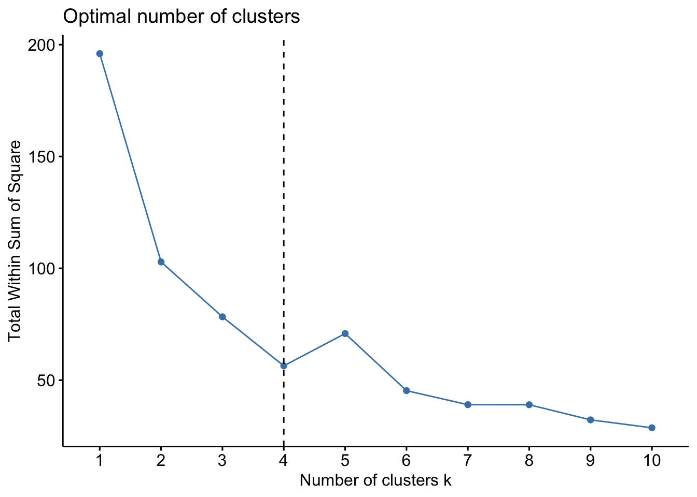

Chapter 3 K-means
2021-12-11 updated
K-means clustering: It is a method to cluster n points into k clusters based on the means of shortest distance. (cautsion: do not confused it with K-nearest clustering)
# use kmeans from stats package
x <- rbind(matrix(rnorm(100, sd = 0.3), ncol = 2),
matrix(rnorm(100, mean = 1, sd = 0.3), ncol = 2))
colnames(x) <- c("x", "y")
(cl <- kmeans(x, 2))## K-means clustering with 2 clusters of sizes 50, 50
##
## Cluster means:
## x y
## 1 1.04594250 0.99192584
## 2 -0.07895856 -0.03821564
##
## Clustering vector:
## [1] 2 2 2 2 2 2 2 2 2 2 2 2 2 2 2 2 2 2 2 2 2 2
## [23] 2 2 2 2 2 2 2 2 2 2 2 2 2 2 2 2 2 2 2 2 2 2
## [45] 2 2 2 2 2 2 1 1 1 1 1 1 1 1 1 1 1 1 1 1 1 1
## [67] 1 1 1 1 1 1 1 1 1 1 1 1 1 1 1 1 1 1 1 1 1 1
## [89] 1 1 1 1 1 1 1 1 1 1 1 1
##
## Within cluster sum of squares by cluster:
## [1] 9.304458 7.498585
## (between_SS / total_SS = 77.6 %)
##
## Available components:
##
## [1] "cluster" "centers" "totss"
## [4] "withinss" "tot.withinss" "betweenss"
## [7] "size" "iter" "ifault"There are 7 Avaliable components you can access it.
Plot the clustering result
plot(x, col=cl$cluster)
#points(cl$centers, col = 1:2, pch = 8, cex=2)
points(cl$centers, col = c("blue", "green"), pch=8, cex=2)